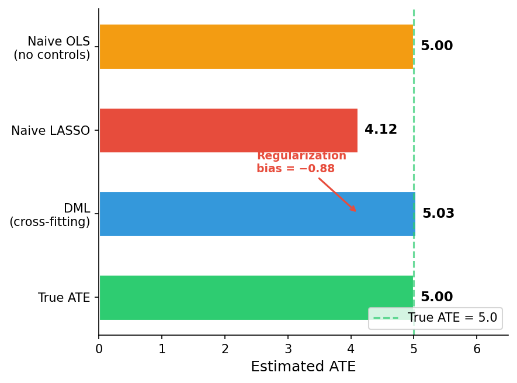
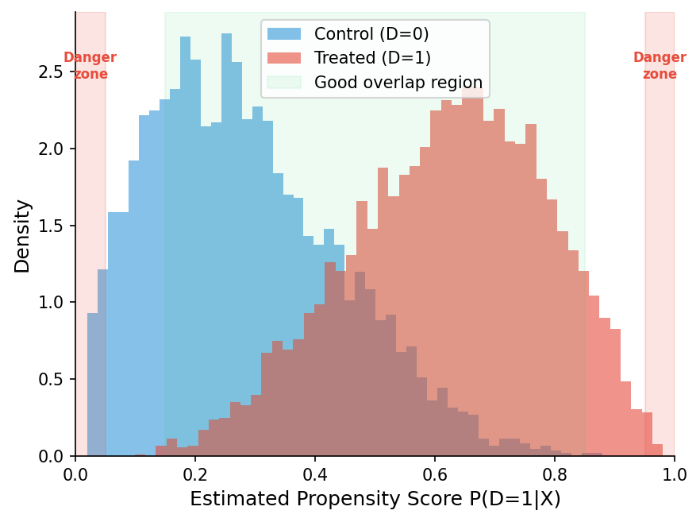
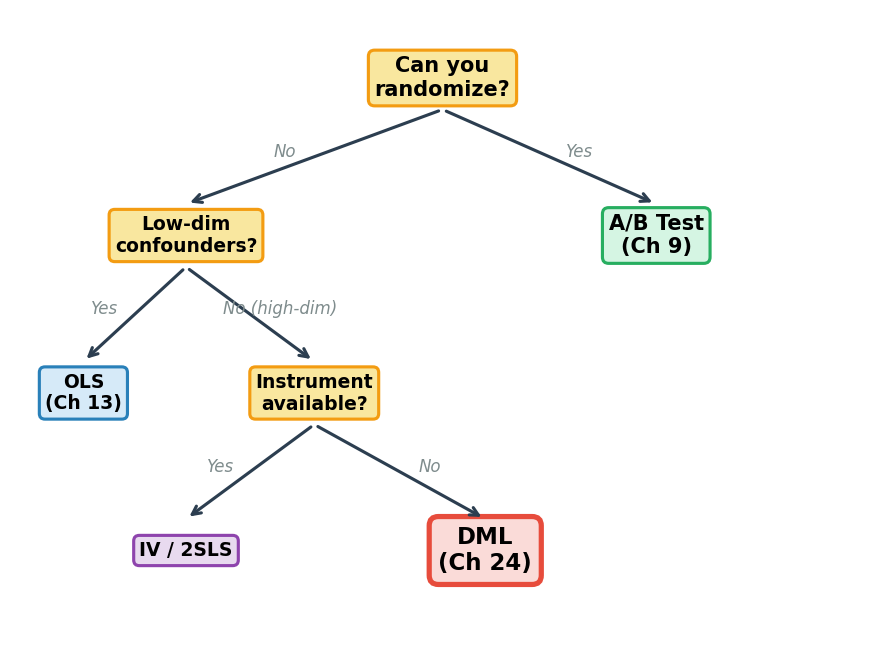

Causal ML: Double Machine Learning
ECON 5200 — Chapter 24 of 26
April 2026 • 75 min • Presentation + Lab
Learning Objectives
- Understand why naive ML produces biased causal estimates (regularization bias)
- Apply DML to estimate the ATE of 401(k) eligibility on wealth
- Analyze heterogeneous treatment effects (CATE) across subgroups
- Evaluate DML assumptions: conditional ignorability, overlap, nuisance specification
Retrieval Practice
Ch 9: What made the Lalonde ATE estimate causal?
→ Randomization. Random assignment ⇒ no selection bias.
Ch 15: LASSO trades a small increase in ___ for a large decrease in ___.
→ Bias for variance. Today we'll see why that breaks causation.
Ch 16: What does the L1 penalty do to unimportant coefficients?
→ Shrinks them to zero. But what if a "unimportant" predictor is a crucial confounder?
DoorDash's \$400M Question
Most promotional spending was wasted on customers who would have ordered anyway.
A/B tests estimated the average effect — but DoorDash needed the individual-level causal response.
DML + CATE targeting → same incremental orders at half the cost per incremental order.
Also: Amazon (marketplace fees, \$400M lift), Uber (driver incentives, \$120M GMV lift).
The Temptation
You have powerful prediction tools: Random Forests, LASSO, cross-validation.
Why not include the treatment \(D_i\) alongside controls \(\mathbf{X}_i\) in a LASSO and read off \(\hat{\theta}\)?
This is one of the most common mistakes in applied data science.
ECB TLTRO III: Naive ML overestimated credit supply effect by 40% (2.0 pp → 1.2 pp after DML).
The Partial Linear Model
\[Y_i = \theta_0 D_i + g_0(\mathbf{X}_i) + \varepsilon_i\]
- \(\theta_0\) = the causal parameter we want
- \(g_0(\mathbf{X}_i)\) = unknown, complex function of confounders
- \(D_i = m_0(\mathbf{X}_i) + V_i\) — treatment depends on confounders too
\(g_0\) and \(m_0\) are nuisance parameters — we need to account for them but don't care about their values.
Why LASSO Fails
\[\hat{\theta}_{\text{LASSO}} = \arg\min_{\theta,\beta}\left\{\sum(Y_i - \theta D_i - \mathbf{X}_i'\beta)^2 + \lambda\|\beta\|_1\right\}\]
The penalty \(\lambda\|\beta\|_1\) shrinks control coefficients → under-controls for confounders.
Omitted confounding leaks into \(\hat{\theta}\) → first-order bias that persists as \(n \to \infty\).

Class Poll
You run LASSO with treatment + 200 controls. The treatment coefficient will be:
Poll Results
Answer: C. LASSO shrinks coefficients toward zero — including the treatment coefficient. Under-controlled confounders leak bias into \(\hat{\theta}\). This is first-order bias: more data doesn't fix it.
Discussion
"LASSO's bias doesn't vanish with more data. What does this break in our Ch 15 bias-variance story?"
Think-pair-share: 2 min think, 2 min discuss, 1 min share.
Key insight: Prediction bias and causal bias have different consequences. Prediction bias means slightly off forecasts. Causal bias means wrong policy decisions. DML uses biased ML for nuisance (acceptable) while keeping the causal estimate unbiased.
The DML Solution: Partialling Out
Recall FWL (Ch 13): Residualize both \(Y\) and \(D\) against controls, then regress residuals.
DML extends FWL to high dimensions: Replace OLS with any ML model in the "cleaning" step.
- Predict \(Y\) from \(\mathbf{X}\) using ML → \(\tilde{Y}_i = Y_i - \hat{g}(\mathbf{X}_i)\)
- Predict \(D\) from \(\mathbf{X}\) using ML → \(\tilde{D}_i = D_i - \hat{m}(\mathbf{X}_i)\)
- Regress residuals: \(\hat{\theta}_{\text{DML}} = (\sum\tilde{D}_i^2)^{-1}\sum\tilde{D}_i\tilde{Y}_i\)
Cross-Fitting: The Anti-Overfitting Firewall
Problem: If we train \(\hat{g}\) and \(\hat{m}\) on the same data, overfitting leaks into \(\hat{\theta}\).
Solution: K-fold cross-fitting (same logic as cross-validation, Ch 15):
- Split into \(K\) folds
- For each fold: train nuisance on \(K{-}1\) folds, compute residuals on holdout
- Stack all residuals → estimate \(\hat{\theta}\) from the full set

Neyman Orthogonality
Small errors in \(\hat{g}\) and \(\hat{m}\) get multiplied together before affecting \(\hat{\theta}\).
If nuisance errors are \(O(n^{-1/4})\), their product is \(O(n^{-1/2})\) — negligible relative to sampling noise.
Result: DML achieves \(\sqrt{n}\) consistency — same rate as OLS.
5200 detail: Score function \(\psi = \tilde{D}_i(\tilde{Y}_i - \theta\tilde{D}_i)\) satisfies \(\partial_\eta E[\psi] = 0\) at the truth.
Application: 401(k) Eligibility
Data: 9,915 households from the 1991 SIPP.
Treatment: Employer offers 401(k) plan (\(D = \texttt{e401}\)).
Outcome: Net total financial assets (\(Y = \texttt{net\_tfa}\)).
Challenge: Employers offering 401(k)s differ systematically — higher-income, more financially sophisticated workers.
Question: Does 401(k) eligibility cause higher wealth?
DML vs. Naive OLS
Naive OLS (no controls)
~$19,000
Causal + selection bias
DML (RF nuisance, 5-fold)
~$8,762
Causal effect only
The ~$10,000 gap is selection bias removed by DML.

Class Poll
In DML cross-fitting, why not use a single held-out test set?
Poll Results
Answer: D. Every observation is used for training (in K-1 folds) AND for residual computation (in its holdout fold). More efficient than wasting a fixed test set — same reason K-fold CV beats a single train/test split.
Discussion
"DoorDash, Amazon, 401(k) — completely different domains. What's the common structure?"
Open discussion: 5 min.
Three common features:
- High-dimensional confounders (hundreds of variables)
- Treatment is NOT randomly assigned
- The goal is a causal effect, not a prediction
If any one is missing: few confounders → OLS, random assignment → A/B test, prediction goal → standard ML.
From ATE to CATE
ATE of \$8,762 is an average. Does every household benefit equally?
\[\tau(\mathbf{x}) = E[Y_i(1) - Y_i(0) \mid \mathbf{X}_i = \mathbf{x}]\]
The ATE is a mean — and it inherits the mean's vulnerability to heterogeneity (Ch 4 callback).
CATE by Income Quartile

The ATE of \$8,762 masks a 15-fold difference between bottom and top quartiles.
Policy implication: Universal 401(k) mandates primarily benefit high-income workers.
CATE at Industry Scale
Amazon
Fee elasticity near zero for niche products, substantial for "head" products with alternatives.
\$400M revenue lift from targeted fees.
Uber
Price sensitivity 22% lower during rain events than OLS estimated.
3.4% utilization increase, \$120M GMV lift.
Decision Scenario
Your firm: 500 features, observational data, n=50K.
CEO asks: "Does our loyalty program increase spending?"
A = gold standard IF you can randomize (but can't un-enroll members). B = unstable in 500 dims. D = hard to find valid instrument.
Three DML Assumptions
1. Conditional Ignorability: \(Y(1), Y(0) \perp D \mid \mathbf{X}\)
After conditioning, treatment is as-good-as-random. DML can't fix unmeasured confounders.
2. Overlap (Positivity): \(0 < P(D=1|\mathbf{X}) < 1\)
Both treated and untreated must exist at every covariate combination.
3. Nuisance Quality: \(\hat{g}, \hat{m}\) converge faster than \(n^{-1/4}\)
ML models must be "good enough" predictors.

The Lalonde Callback: Full Circle
| Chapter | Method | Estimate | Key Insight |
|---|---|---|---|
| Ch 8 | Two-sample t-test | \$1,794 | Statistical significance ≠ causal |
| Ch 9 | Permutation + Bootstrap | \$1,794 (ATE) | Randomization makes it causal |
| Ch 24 | DML | ~\$1,600–\$2,100 | Recovers benchmark from obs. data |
Same data, three chapters, increasingly sophisticated analysis.
DML doesn't replace experiments — but when experiments are impossible, it's the next best thing.
Class Poll
The DML estimate is ~\$8,762. Naive OLS says ~\$19K. The ~\$10K difference represents:
Poll Results
Answer: B. The \$10K gap is selection bias — 401(k) firms have wealthier workers for other reasons. DML's two-step residualization strips that away. Same logic as Lalonde in Ch 9.
Choosing the Right Method

Connections
Causal Arc (Ch 9 → 10 → 24)
- Experiments → DAGs → ML-powered causation
- Prediction serves causation
ML Arc (Ch 15–23 → 24)
- CV → Cross-fitting
- LASSO → Nuisance learner
- RF → Default DML engine
- TF-IDF → Causal controls
Next: Ch 25 (AI Literacy) • Ch 26 (Capstone — your DML project)
Key Takeaways
- Naive ML fails for causation — regularization bias persists even with infinite data
- DML separates prediction from causation — ML handles confounders, orthogonality protects \(\hat{\theta}\)
- Cross-fitting = CV for causal inference — same K-fold logic, different objective
- ATE can hide heterogeneity — 401(k) effects: \$1,200 (Q1) to \$18,400 (Q4)
- Three assumptions required — conditional ignorability, overlap, adequate nuisance models
Exit Ticket
1. Complete: "Cross-fitting prevents _________ by ensuring nuisance models are trained on different observations than those used to _________."
2. One thing I'm confused about from today.
Write on paper or device. 2 minutes.
Lab Preview
Part 1 (Guided): Demonstrate regularization bias on simulated data
Part 2 (Semi-guided): Manual 2-fold cross-fitting — understand why it works
Part 3 (Open-ended): 401(k) ATE + CATE + Causal Forest visualization
Notebook: lab_24_dml_401k.ipynb